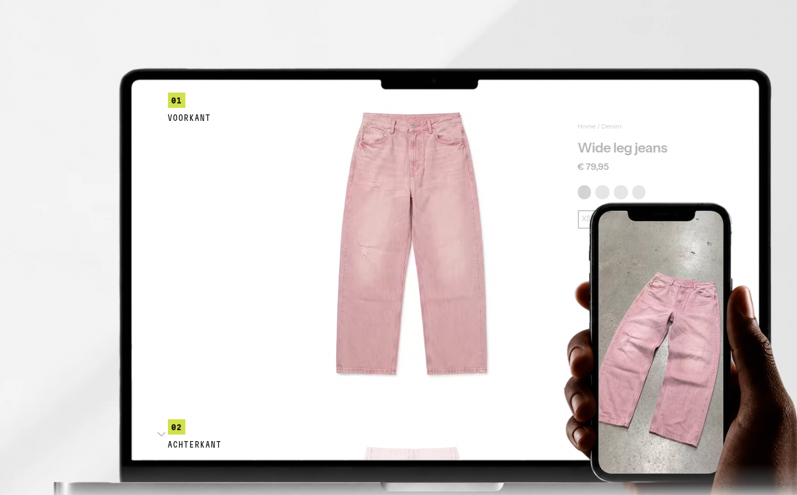

Twee vragen los van elkaar: welke woorden er staan, en welke vorm het blok heeft. Ze hangen samen — een kop van twee korte regels vraagt een andere opzet dan een kop van zeven woorden — maar je kunt ze apart kiezen. Zeg één nummer uit deel 1 en één letter uit deel 2, en ik bouw die combinatie.
Alles hieronder staat in de letters en de kleuren van de site zelf, op de maat waarop het op een laptopscherm staat. De laptop in deel 2 is een echte opname van de voorpagina van vandaag.
Wat de kop moet doen, in deze volgorde: in één blik duidelijk maken waar het over gaat, en daarna wat het voor jou betekent. De huidige kop doet het eerste half en het tweede niet — "campagne" is één ding dat we maken, en jij levert er vijf. Het dikke woord is het woord dat zwart en zwaar wordt, zoals "CAMPAGNE" dat nu is.
You upload.
We deliver the campaign.
Wat hij goed doet: hij zet de rolverdeling neer in vier woorden. Jij doet één ding, wij doen de rest — dat is de kern van een managed dienst en dat komt aan.
Wat er niet klopt: een campagne is één van de dingen die je koopt, en niet de grootste. Wie catalogfoto's voor zeventig producten nodig heeft, leest "campagne" en denkt dat hij op de verkeerde site is. En "uploadt" beschrijft een handeling op een website, geen uitkomst.
Every image your brand needs.
Without a shoot.
Waarom deze: de eerste regel zegt dat het om alles gaat — catalog, lifestyle, video, elke maand opnieuw — en de tweede zegt in twee woorden waarom het anders is dan wat je gewend bent. Samen is dat precies "managed full content service" zonder dat er één Engels vakwoord in staat.
Het risico: "alle beelden" is een grote belofte. Die moet de pagina eronder waarmaken, en dat doet hij — de laptop toont de drie diensten achter elkaar. Let op dat het dus geen campagnebelofte meer is maar een voorraadbelofte; dat is eerlijker en makkelijker na te komen.
lines: ['Alle beelden voor je merk.', '<em>Zonder shoot.</em>']
Your brand's image department.
Waarom deze: dit is letterlijk wat je bent — een afdeling die een merk niet zelf hoeft te hebben. Eén regel, geen constructie, en het verklaart in één klap waarom er abonnementen zijn en waarom er een planning is.
Het risico: hij zegt niet wat je krijgt. Iemand die nog nooit van AI-productbeeld gehoord heeft, leest "afdeling" en weet nog steeds niet of het om foto's, video of advies gaat. Deze kop heeft de regel eronder harder nodig dan de andere.
lines: ['De <em>beeldafdeling</em>', 'van je merk.']
Product photography
without the photoshoot.
Waarom deze: niemand hoeft na te denken. Het noemt de categorie waar een merk zelf al in zoekt ("productfotografie") en zet er meteen de tegenstelling achter. Van alle opties is dit degene die het beste werkt op een advertentie of in een zoekresultaat.
Het risico: het woord fotografie sluit de clips buiten, en video is juist het deel dat groeit. En het is de veiligste van de zes — het klinkt als een dienstverlener en niet als iets nieuws.
lines: ['Productfotografie', '<em>zonder fotoshoot.</em>']
Your new images are live
this week.
Waarom deze: snelheid is het enige waarop een shoot je nooit kan verslaan, en het is meetbaar — je levert binnen drie werkdagen en de planning laat dat zien. Een kop die een datum belooft in plaats van een gevoel, is zeldzaam.
Het risico: je maakt hem elke dag waar of je maakt hem nooit waar. Eén drukke week en deze kop werkt tegen je. En hij zegt niet wat er dan staat.
lines: ['Je nieuwe beelden staan er', '<em>deze week.</em>']
We make the images.
You run the brand.
Waarom deze: dezelfde vorm als de kop van nu — twee korte zinnen die elkaar spiegelen — maar met een uitkomst in plaats van een handeling. "Jij runt je merk" is wat een eigenaar van een klein merk het liefste zou doen en waar hij het minst aan toekomt.
Het risico: het is een belofte over je leven en niet over een product. Mooi op een bus, dun op een pagina waar iemand een prijs zoekt.
lines: ['Wij maken het beeld.', '<em>Jij runt je merk.</em>']
A month of content,
every month.
Waarom deze: dit is de enige die het abonnement vooraan zet in plaats van de losse bestelling, en dat is waar je het meeste aan verdient en waar de planning voor gebouwd is. Hij maakt van VISUAILS iets doorlopends in plaats van een klus.
Het risico: wie één keer twintig producten wil laten doen, denkt dat hij een abonnement moet nemen. Dat is precies de drempel die je er op andere plekken uit hebt gehaald.
lines: ['Een maand content,', '<em>elke maand.</em>']
Drie opzetten voor hetzelfde blok, alle drie met kop 1 erin zodat je de vorm vergelijkt en niet de woorden. Wat in alle drie verandert ten opzichte van nu: de regel die zegt wat je verkoopt staat direct onder de kop in plaats van linksonder in de hoek, waar hij nu op een telefoon onder de vouw valt en op een laptop in een leeg kwart hangt.
Links de woorden, rechts het scherm — zoals nu. Wat verandert: de kop krijgt een vaste maximumbreedte zodat hij nooit meer op vier regels valt met "DE" alleen op regel drie; de zin over wat je levert schuift van onderin naar direct onder de kop; en de strook onder de hero (dienst, streep, "wat jij stuurt") loopt door over de volle breedte in plaats van alleen onder de laptop. Het lege kwart linksonder verdwijnt daarmee vanzelf.
VISUAILS™ · Enschede, NL
Catalog, lifestyle en video van de productfoto's die je al hebt. Geen shoot, niets om zelf te leren, geen minimum — één product mag ook.

De kop staat gecentreerd over de hele breedte en is daardoor een stuk groter — op een laptop ongeveer anderhalf keer zo groot als nu. Eronder in één rij de zin en de twee knoppen, en dáár weer onder het scherm, dat over de onderrand heen loopt. Je leest van boven naar beneden in plaats van van links naar rechts, en de kop krijgt de ruimte die een kop van vier of vijf woorden verdient. Dit is de opzet die het meest op een merk lijkt en het minst op een dienstenpagina.
VISUAILS™ · Enschede, NL
Catalog, lifestyle en video van de productfoto's die je al hebt.
Zelfde indeling als A, maar onder de kop staan de drie diensten als drie regels met wat je per stuk krijgt. Wie "alle beelden" leest, ziet één regel lager wélke beelden — de belofte en het bewijs staan dan binnen één oogopslag van elkaar. Nadeel: het is de drukste van de drie, en de laptop doet dit eigenlijk al door van catalogset naar carrousel naar clip te draaien. Kies deze als je merkt dat mensen niet doorhebben dat video er ook bij zit.
VISUAILS™ · Enschede, NL